Рогейн в России
Командная игра на сутки
Рогейн — командное ориентирование по выбору: за контрольное время от трёх часов до суток команда из двух–пяти человек должна набрать как можно больше очков, сама решая, какие из отмеченных на карте контрольных пунктов разной стоимости "брать" и в каком порядке. Вид спорта родился в Австралии (о мировой истории — в статье «Рогейн в мире»), но в России у него есть собственная предыстория — многочасовые туристские соревнования по «закрытому маршруту», которые Н. В. Благово считал прямыми предшественниками рогейна. Первый рогейн в стране прошёл в августе 1999 года в Перми, через два года там же разыграли первый чемпионат России, в 2003-м — первый в истории чемпионат Европы, а в 2013-м Россия приняла чемпионат мира. Сегодня чемпионаты России бегом проводятся каждый год, в 2011–2022 годах разыгрывались и чемпионаты на лыжах, велосипедах и байдарках, а под Петербургом и Москвой рогейн стал одним из самых массовых стартов с картой.
Статья опирается на материалы Федерации рогейна России (история, таблицы чемпионатов и медалей, новости), биографию Г. Н. Шестакова на сайте Федерации спортивного ориентирования России, книгу Н. В. Благово «Первые азимуты на берегах Невы», исторические публикации Telegram-канала «Рогейномания», страницы O-Site, сайты организаторов и, конечно, на рогейны в календаре и архив карт O-Maps. Календарь O-Maps исторически петербургский, поэтому и рогейны Петербурга и Ленинградской области в нём представлены полнее всего. Все упомянутые люди собраны в указателе имён в конце статьи.
- Предтеча
- ночной «закрытый маршрут» В. В. Добковича (1939) и туристские соревнования 1940–1950-х
- Первый рогейн
- 28–29 августа 1999, Пермь, 12 команд (организатор — Г. Н. Шестаков)
- Чемпионаты России
- бегом — 2001 и ежегодно с 2005 (23 к 2026 году); на лыжах — 2011–2013, на велосипедах — 2013–2022 (шесть), на байдарках — 2015, 2019, 2021
- Федерация
- Федерация рогейна России — с 2009 года, член Международной федерации рогейна с 2012-го, отделения в 48 субъектах
- Чемпионаты мира и Европы в России
- ЧЕ-2003 (Пермь), ЧЕ-2008 (Мичуринское), ЧМ-2013 (Алоль); ЧЕ-2022 под Выборгом отменён
- Медали
- 212 медалей российских команд на чемпионатах мира и Европы 2003–2025 во всех классах; первая победа в абсолютном зачёте чемпионата мира — 2008
- Главные районы
- Карельский перешеек, Подмосковье, Пермь, Нижегородская область, Южный Урал (Кыштым), Псковщина (Алоль)
- Архив O-Maps
- 613 рогейнов 1999–2026 годов в календаре (540 из них — из петербургского календаря), 406 карт рогейнов в архиве, из них 404 — российские (на 14 ноября 2026 года; все числа O-Maps — на эту дату)
Места на карте
Где проходили соревнования, о которых рассказывает статья. Точка стоит там же, где событие на карте календаря O-Maps — в его координатах или в центре его карты, поэтому у многодневных стартов точек несколько. Цвет точки показывает, когда место впервые появляется в статье, число в кружке — сколько рядом точек. Значок 📍 в тексте ведёт к месту на этой карте.
Все места списком
До 1998: «закрытый маршрут», лыжни здоровья и буклет из США
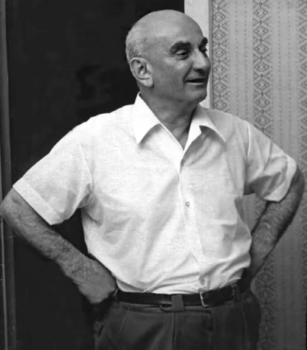
Командные соревнования с картой и компасом на многие часы появились у нас задолго до слова «рогейн». В 1939 году ленинградский преподаватель Владимир Владиславович Добкович провёл ночные командные соревнования туристов по «закрытому маршруту» — участники искали контрольные пункты, не зная трассы до старта, а в январе 1941 года рядом с Кавголово прошли первые лыжные гонки по закрытому маршруту с винтовкой и грузом за спиной (подробнее — в статье «Ориентирование в России и СССР»). После войны такие соревнования стали массовыми: команды по пять человек, у мужчин — 12 кг контрольного груза у разрядников и 8 кг у новичков, дистанции по «синькам» топографических карт; в 1957 году Центральный совет по туризму утвердил первые временные правила туристских соревнований, а в феврале 1958-го в Свердловске прошли I Всероссийские зимние туристские соревнования📍.
Потом, как пишет Никита Владимирович Благово, соревнования по закрытому маршруту «постепенно почти прекратили своё существование, однако совершенно неожиданно, в конце прошлого века они возродились в новых условиях и, соответственно, с несколько новой программой («выбор» вместо «заданного направления»), получив английское название «Rogain»… т.к. на этот раз были заимствованы из… Австралии. Воистину — что имеем, не храним» («Первые азимуты…», с. 13). Первый чемпионат мира по рогейну прошёл в Австралии в 1992 году, а российские команды впервые вышли на чемпионат мира через десять лет, в 2002-м.
Человеком, который соединил эти две истории, стал пермяк Герман Николаевич Шестаков (1932–2008) — мастер спорта СССР по туризму и судья всесоюзной категории по ориентированию. В 1963 году он привёз пермскую команду на первые Всесоюзные соревнования в Ужгород, 16 лет возглавлял пермскую секцию ориентирования, организовал II Всесоюзные соревнования 1965 года в Перми📍 и был главным судьёй первых Всесоюзных соревнований по лыжному ориентированию в Калуге в 1968 году. В конце 1980-х, будучи инструктором городского клуба туристов «Компас», он превратил походы выходного дня в «Лыжню здоровья»: на 70 км стартовало до 800 человек, на 100 км — по несколько сотен (биография на сайте ФРР).
В 1997 году 65-летний Шестаков поехал с пермскими ветеранами в США на Кубок мира по ориентированию среди ветеранов. Медалей не завоевал, но привёз буклет с календарём соревнований и координатами Чешской ассоциации рогейна и горного ориентирования. «Суточное ориентирование напомнило старому туристу Шестакову „закрытые маршруты“ времён его молодости. И он решил внедрить этот новый „старый“ вид спорта на пермской земле», — сказано в его биографии на сайте Федерации рогейна России. Шестаков установил связи с чешскими рогейнерами, затем с Международной федерацией рогейна, которая включила его в свой состав наблюдателем. Многочасовые туристские старты с картой были и в Петербурге: в календаре O-Maps с 2000 года отмечен «Осенний марш-бросок»📍 питерских туристов с поиском КП по картам 1:25 000–1:50 000 и обязательным ночлегом между этапами (описание серии — на странице «Марш-Броска»).
1998–2003: пермский вариант
Предшественником пермских рогейнов стали соревнования в заданном направлении, которые Шестаков провёл 29 августа 1998 года: 35 км, 12 контрольных пунктов, сильно генерализованная чёрно-белая карта масштаба 1:50 000 и около 30 участников, из которых всю дистанцию прошёл только Виктор Брызгалов. Ровно через год, 28–29 августа 1999-го, в Перми прошёл открытый чемпионат города по рогейну📍 в 24-часовом формате — 12 команд и первый рогейн в России. Затем последовали 12-часовой старт в октябре 1999 года, 5-часовой в мае 2000-го и 2–3 сентября 2000 года — первый чемпионат Пермской области: 31 команда из Перми, Москвы, Новосибирска, Уфы и Новоуральска, а абсолютными победителями стали чехи Томаш Вацлавек и Томаш Здрагал. Зимой 2001 года Шестаков впервые провёл «зимний рогейн», и в том же году, по его биографии, рогейн с его подачи вошёл в «Правила соревнований по спортивному ориентированию».
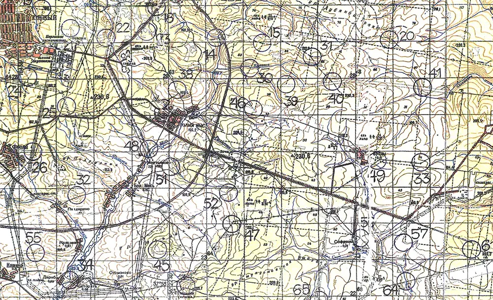
Первый открытый чемпионат России по рогейну📍 прошёл 25–26 августа 2001 года с центром на лыжной базе «Динамо» на юго-восточной окраине Перми. Карта — топографическая, 1:50 000, одна на команду; все 64 КП стоили по 20 очков и обозначались полосой белой краски на дереве. Отметку Шестаков придумал сам — команда носила пластиковую крышку с карточкой и на каждом КП прокалывала её гвоздём, положение которого было своим для каждого пункта. Чехи потом называли эту систему «русским Emit» («Рогейномания»). Чемпионами стали пражане Мирослав Сейдл и Пётр Боранек — 52 КП из 64. В смешанных командах победили Наталья Копылова и Алексей Городилов из Лысьвы, среди женщин — Анна Расчёскина и Елена Вялых. Число участников источники называют по-разному: в таблице ФРР и в Википедии — 37 команд и 74 участника, в биографии Шестакова на сайте ФРР — «40 команд». Среди 74 был и 22-летний выпускник Пермского университета Александр Якимов — через три года он переедет в Подмосковье, начнёт там «Московский рогейн» и станет создателем сайта rogaining.ru и многолетним вице-президентом Федерации рогейна России.

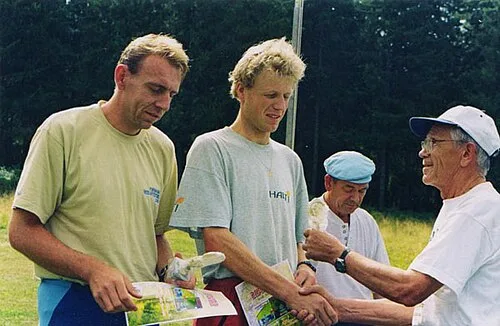
В июле 2002 года Шестаков вывез сборную Пермской области, 11 команд, на 5-й чемпионат мира в Чехию — это был первый чемпионат мира с российскими участниками. А 16–17 августа 2003 года Пермь приняла первый в истории чемпионат Европы по рогейну📍: 40 команд, 84 участника из России, Чехии, Финляндии, Австрии и США. Привлечь к нему официальные спортивные организации не удалось. Ветеран Николай Глухов и журналист Владислав Тарасов писали тогда в «Азимуте»: «Этого вида спорта в России официально не существует. Упоминание о нём есть только в „Правилах соревнований по спортивному ориентированию“». На предложение присоединиться к проведению чемпионата председатель областного спорткомитета, не найдя рогейна в Единой всероссийской спортивной классификации, ответил: «Значит, такого вида спорта в России нет и никакого чемпионата проводиться в Перми не будет!» («Азимут», 2003, № 3). Чемпионат всё-таки состоялся: в абсолюте снова выиграли Сейдл и Боранек, а российские команды взяли 25 медалей во всех классах, в том числе золото у женщин (Елена Бондарь и Инна Жабреева) и в смешанном классе (Николай Миронов и Ольга Творогова).
Шестаков ещё несколько лет проводил в Перми летние и лыжные рогейны, сам выходил на старт в группе суперветеранов и в 2006 году стал серебряным призёром чемпионата Европы. 20 сентября 2008 года он трагически погиб — «новатор, основоположник Рогейна в России», как написала о нём Светлана Волкова (rogaining.ru). «В 2009 году рогейну в России исполняется 10 лет», — открывалась биография Шестакова, опубликованная федерацией в январе 2009 года.
2004–2009: рогейн расходится по стране
С 2003 года, по данным ФРР, рогейны начали проводить в Нижегородской области, Петербурге и Ленинградской области, в Тольятти. В календаре O-Maps петербургские рогейны появляются в 2005 году: в мае — первый BikeAdventure у Громово (велосипедное ориентирование по выбору), в июле — трёхчасовой «Горный кросс-3»📍 в Орехово, а в ноябре — I открытый Кубок Санкт-Петербурга📍 с суточным форматом и примерно 150 участниками. Рогейнеры ездили и за границу — на чемпионате Европы 2005 года в Эстонии бронзу в классе ветеранов выиграли петербуржцы Виктор Рылов и Андрей Фершалов.
После трёхлетнего перерыва возобновились чемпионаты России, и с тех пор они не пропускали ни одного года. II чемпионат📍 прошёл 3–4 сентября 2005 года в Городецком районе Нижегородской области (41 команда). Москвичи Сергей Ященко и Олег Калинин взяли тогда все КП — 265 очков из 265. Через год они повторили успех на Самарской Луке под Тольятти📍, а в августе 2006-го выиграли в абсолюте чемпионат Европы на Украине — первое европейское золото российской команды в абсолюте. В 2007 году чемпионат Европы в Латвии выиграли Евгений Гаврилов и Евгений Домбровский.
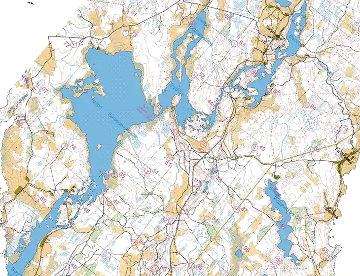
Первым крупным петербургским стартом стал IV чемпионат России📍 24–26 августа 2007 года между озёрами у шоссе Сапёрное — Мельниково: 76 команд, 162 участника, форматы 24, 8 и 3 часа и 8 часов на велосипеде. Чемпионат был одновременно II этапом Кубка Санкт-Петербурга, информацию о нём публиковал «Рогейн-клуб СПб» (сайт чемпионата), а положение подписал президент Федерации спортивного ориентирования России Ю. С. Никонов (до появления своей федерации рогейн формально относился к спортивному ориентированию). Абсолютными победителями стали латыши Николай Луцанс и Айварс Михайлов, лучшими из российских мужских команд — Калинин и Ященко. В 2008 году чемпионат в Солнечногорском районе Подмосковья📍 (в подписи его карты в архиве O-Maps — «Золото Сенежа») впервые собрал больше ста команд — 109, а в 2009-м в Кузнечном📍 было уже 112 команд, 230 человек. Результаты и карта того чемпионата публиковались на сайте «Горного кросса».
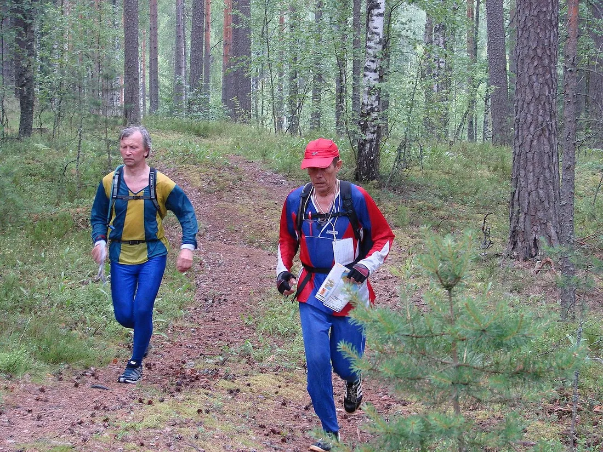

Главным событием этих лет стал V чемпионат Европы📍 12–13 июля 2008 года у Мичуринского: 143 команды, 306 спортсмена (участники жили в палаточном лагере и общежитии местного лицея). Абсолютными чемпионами снова стали Сейдл и Боранек, вторыми в абсолюте — победительницы женского класса Анна Бурлинова и Ирина Сафронова. Организатором чемпионата России 2007 и Европы 2008 года «Список 280» называет Игоря Комина, проводившего рогейны с 2006 года. А через два месяца на чемпионате мира в Эстонии Евгений Домбровский и Павел Шестаков стали абсолютными чемпионами мира, опередив 338 команд. «По количеству ежегодно проводимых соревнований и количеству участников Россия уже не уступает родине рогейна — Австралии», — писала Федерация рогейна в январе 2009 года (rogaining.ru). Осенью того же года была создана и сама федерация (о ней — ниже).
2010-е: чемпионат мира в Алоли и новые дисциплины
Десятилетие началось с расширения программы. В марте 2011 года в Ивановской области прошёл I чемпионат России по рогейну на лыжах📍 (34 команды), в 2013-м под Полянами — первый чемпионат на велосипедах📍, в 2015-м в Саратовской области — первый на байдарках📍. В 2012 году Федерация рогейна России вступила в Международную федерацию рогейна, а на чемпионате мира в Чехии российские команды возглавили медальный зачёт: три золотые, одна серебряная и четыре бронзовые медали.
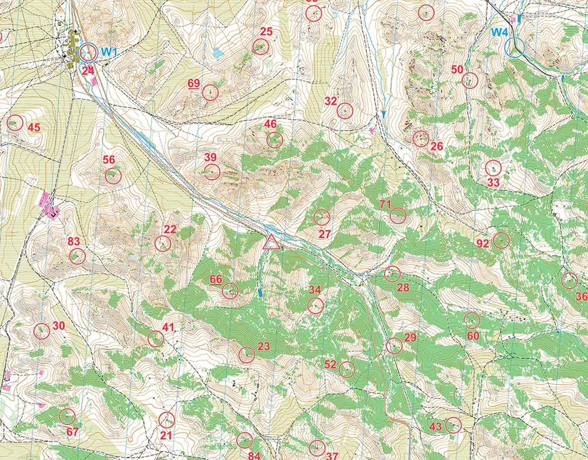
26–27 июля 2013 года в Псковской области, у Алоли, прошёл 11-й чемпионат мира📍 — первый и пока единственный в России: 314 команд, 664 участника из 19 стран. Директором чемпионата был Алексей Никитин, главным секретарём — Александр Якимов, контролёром Международной федерации — Константин Володин (сайт чемпионата). Карту чемпионата📍 рисовали А. Минаков, С. Симакин, С. Сибилёв и Е. Костылев. В абсолюте выиграли эстонцы Сильвер и Райн Энсаары, а россияне взяли 16 медалей (6 золотых, 4 серебряных, 6 бронзовых) и снова стали первыми в медальном зачёте. В смешанном классе победили Наталья Абрамова и Андрей Шведов, в женском — Анна Шавлакова и Анастасия Ростовцева. В том же году в России, по итогам ФРР, прошло больше 60 рогейнов и сразу три чемпионата страны — на лыжах, на велосипедах и бегом (итоги 2013 года).
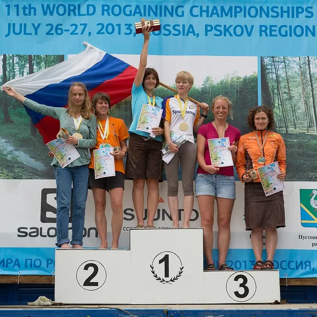

Чемпионаты России стали ездить по всей стране: Кыштым📍 на Южном Урале (2011), Хвалынск📍 на Волге (2013), Красноярск📍 (2015), Хакасия📍 (2018), Верх-Нейвинский📍 в Свердловской области (2019). Рекорд участия поставил чемпионат 2017 года📍 в Богородском районе Нижегородской области (в подписи его карты в архиве — «Осень Поволжья 2017») — 122 команды и 267 участников. Сменилось и поколение победителей: на смену москвичам Калинину и его партнёрам пришла команда «Дети болот» — в 2015 году чемпионат впервые выиграли Николай Мирошкин и Дмитрий Шемятихин, позже к ним присоединился Сергей Мирошкин.
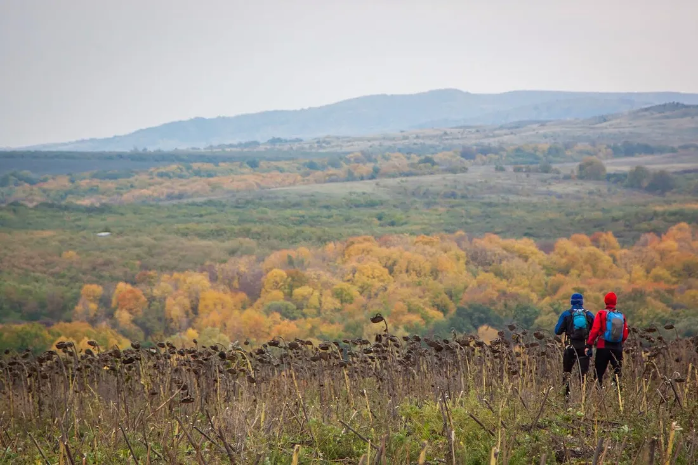

2020-е: пандемия, отстранение и свой календарь
В 2020 году чемпионат России в Рязанской области из-за COVID-19 перенесли с мая на 12–13 сентября📍 (в таблице ФРР осталась первоначальная дата — 2–3 мая). На чемпионат Европы в Латвии из России смогла приехать лишь одна команда — Наталья Зимина, Игорь Манжай и Олег Калинин выиграли смешанный класс. В Эстонии в 2021 году медалей у россиян не было.
Следующий чемпионат Европы должен был пройти 28–29 мая 2022 года в Ленинградской области, на базе «Зеркальный»📍 в Выборгском районе, но его отменили. В мае Федерация рогейна России сообщила о санкциях Международной федерации рогейна: до конца июня 2023 года чемпионаты мира и Европы в России и Беларуси не проводятся, а спортсмены этих стран не могут представлять свои страны и выступать с национальной символикой (новость ФРР). В июле 2022-го совет IRF пошёл дальше — 11 голосами против 7 при пяти воздержавшихся решил не допускать спортсменов из России и Беларуси на чемпионаты мира и Европы до конца 2023 года (IRF). Чемпионат мира 2022 года в Чехии, мира 2023-го в США, Европы 2023-го в Финляндии и Европы 2024-го в Эстонии прошли без российских команд.
Взамен отменённого чемпионата Европы в те же дни на той же базе прошёл фестиваль «Зеркальный-2022»📍 с 2-м Кубком России📍 бегом на 24 часа и 6-м чемпионатом России на велосипедах📍 (ФРР). Чемпионаты России шли своим чередом — Владимирская область📍 (2021), Кыштым📍 (2022), Абрау-Мысхако под Новороссийском📍 (2023), Нижегородская📍 (2024) и Костромская📍 (2025) области. В календаре O-Maps 2021–2026 годы — самые насыщенные рогейнами за всю историю (42–57 в год).
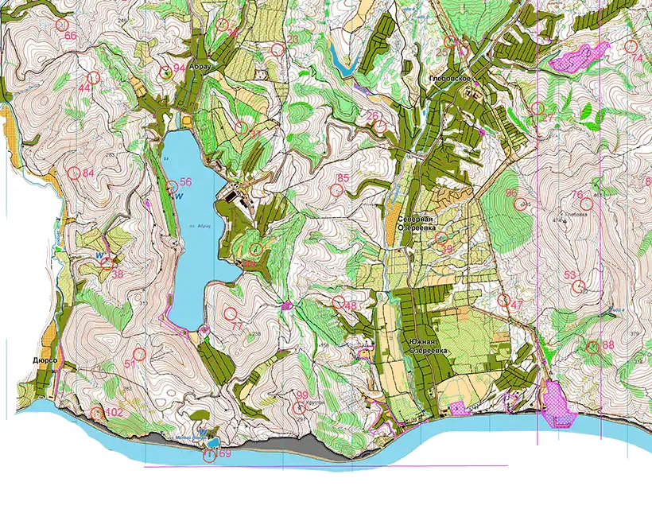
В 2025 году россиян допустили на чемпионат мира в Испании в нейтральном статусе, и немногочисленные российские команды выиграли три медали: Максим Цветков и Семён Якимов — мужской открытый класс и абсолютный зачёт среди 351 команды (таблица ФРР, рассказ М. Цветкова), Екатерина Петухова и Анна Шляпникова — женский открытый класс, а Борис Димитров, Нина Михеева и Вячеслав Савченко стали вторыми среди смешанных команд-суперветеранов. На чемпионате Европы 2026 года в Чехии из России выступали лишь семь человек как «международные» участники, без медалей. Главным стартом сезона-2026 для российских рогейнеров стал XXIII чемпионат России под Выборгом📍: 84 команды из 25 регионов, 181 участник.
Федерация рогейна России: правила, отделения, календарь
Общероссийская физкультурно-спортивная общественная организация «Федерация рогейна России» (ФРР) создана, по данным Википедии, на учредительной конференции 10 сентября 2009 года. Её сайт rogaining.ru, созданный Александром Якимовым, стал архивом российских и мировых стартов. С 2012 года ФРР — член Международной федерации рогейна (IRF) с двумя делегатами в её совете; сейчас у федерации отделения в 48 субъектах — от Мурманской области до Приморья и Севастополя (о федерации). На октябрь 2026 года президент ФРР — Олег Калинин, вице-президенты — Павел Демещик и Геннадий Ягодкин, членом совета и техническим менеджером IRF числится Сергей Ященко; петербургское отделение возглавляет Александр Копелевич, ленинградское областное — Виктор Рылов (руководство ФРР).
Соревнования в России проводятся по Российским правилам соревнований по рогейну, международные — по правилам IRF. Правила делят рогейны по контрольному времени на короткие (3–5 часов), средние (6–11), длинные (12–23) и классические (24 часа), а по способу передвижения — на бег, лыжи и велосипед; в команде от двух до пяти человек, классы — мужские, женские и смешанные команды в открытой группе, у молодёжи (до 23 лет), ветеранов (45+) и старше. Чемпионат России бегом — всегда 24 часа, на лыжах и велосипедах — от 12 до 24. С 2021 года разыгрывается и Кубок России: первый прошёл под Новороссийском, второй — на «Зеркальном». Заявки на Кубки 2027–2028 годов ФРР принимает в формате 24 часа или не короче 12 часов (новость ФРР).
Календарь федерации объединяет старты десятков независимых организаторов. По оценке ФРР, с 2009 года в России ежегодно проходит около 50 рогейнов, из них около семи 24-часовых, а география охватывает Пермь, Екатеринбург, Челябинск, Нижний Новгород, Псков, Тольятти, Омск, Иваново, Рязань, Кострому, Ижевск, Тулу, Ростов-на-Дону, Красноярск, Петербург, Краснодар и Москву («Рогейн в России»).
Чемпионаты России: 23 суточных старта от Перми до Новороссийска
За четверть века чемпионат России бегом прошёл 23 раза. Больше всего — пять — приняла Ленинградская область (2007📍, 2009📍, 2012📍, 2016📍, 2026📍), три — Нижегородская, по два — Московская и Челябинская («Рогейномания»). По макрорегионам Северо-Запад принял шесть чемпионатов, Поволжье и центр России — по пять, Урал — четыре, восток страны (Красноярский край и Хакасия) — два, Юг — один; XXIV чемпионат 2027 года📍 анонсирован на озере Аракуль в Челябинской области. Чемпионаты проводят местные команды: в 2026 году, например, организатором был петербургский «Мультиспорт», директором — Илья Строганов, начальником дистанции — Виктор Рылов (ФРР).
Число команд колебалось от 33 до 122: больше ста команд собирали чемпионаты 2008 (Подмосковье), 2009 (Кузнечное), 2010 (Печорский район Псковской области) и 2017 года (Нижегородская область), меньше — дальние, вроде Красноярска📍 (51 команда) или урочища Карчалык в Хакасии📍 (50). Самый титулованный чемпион — москвич Олег Калинин: восемь побед в абсолютном зачёте в 2005–2016 годах с разными партнёрами (Сергеем Ященко, Сергеем Юткиным, Евгением Домбровским, Андреем Шведовым, Константином Соловьёвым). У следующего поколения по пять абсолютных побед у Николая Мирошкина (с 2015 года, вместе с Сергеем Мирошкиным и Дмитрием Шемятихиным) и у Дмитрия Панова (с 2018-го), три — у Семёна Якимова (2021, 2023, 2024). Дважды абсолютный зачёт выигрывала смешанная команда: в 2011 году — Андрей Шведов и Наталья Абрамова, в 2017-м — Мирошкин, Анна Коробко и Шемятихин.
Отдельные чемпионаты разыгрывались и в других дисциплинах. На лыжах их было три (2011📍, 2012📍, 2013📍; от 19 до 38 команд), на велосипедах — шесть (2013📍, 2014📍, 2015📍, 2016📍, 2018📍, 2022📍), пять из них — в Ленинградской области; на байдарках — три (2015📍, 2019📍, 2021📍).
На чемпионатах мира и Европы: 212 медалей
На международные старты российские команды выезжают с 2002 года, и уже на домашнем чемпионате Европы 2003 года📍 завоевали 25 медалей. Первую медаль чемпионата мира (серебро у женщин-суперветеранов) в 2004 году в Аризоне выиграла Надежда Попова в команде с американкой — в таблицу ФРР эта медаль не включена, а в календаре O-Maps учтена; по таблице ФРР первые медали чемпионатов мира россияне взяли в 2008 году в Эстонии — сразу шесть, включая абсолютную победу Домбровского и Шестакова. Всего, по календарю O-Maps с поправкой по таблице ФРР, на чемпионатах мира и Европы 2003–2025 годов российские команды завоевали 212 медалей во всех классах (66 из них — на чемпионатах мира): 76 золотых, 67 серебряных и 69 бронзовых.
Самая успешная пара в истории российского рогейна — Марина Галкина и Нина Михеева. По рейтингу ФРР (по 2019 год) у каждой по 13 медалей чемпионатов мира (у Галкиной и у Михеевой по 9 золотых) и 16 и 15 медалей чемпионатов Европы, а в 2025 году Михеева добавила 14-ю медаль чемпионатов мира — серебро среди смешанных суперветеранов; они побеждали и в открытом женском классе (чемпионат мира 2014, 2017), и среди ветеранов, где выигрывали все чемпионаты мира с 2010 по 2019 год, кроме 2015-го. Женский открытый класс чемпионатов мира выигрывали ещё Анастасия Галитарова и Ирина Сафронова (2012), Анна Шавлакова — с Анастасией Ростовцевой (2013📍) и с Натальей Абрамовой (2015), Анна Бурлинова и Мария Пляшечко (2019), Екатерина Петухова и Анна Шляпникова (2025); смешанный — Ирина Сафронова и Павел Сысоев (2008), Андрей Шведов с Анной Шавлаковой (2012) и Натальей Абрамовой (2013), Константин Иванов и Наталья Зимина (2015). В абсолюте чемпионат мира выигрывали дважды — в 2008 и 2025 годах.
Не отставали и ветераны из Петербурга. В 2005 году бронзу у ветеранов взяли Виктор Рылов и Андрей Фершалов, в 2007-м у суперветеранов — Александр Лисененков и Евгений Емельянов, которые на домашнем чемпионате Европы 2008 года📍 стали чемпионами Европы. Александр Копелевич с партнёрами выигрывал класс суперветеранов на чемпионатах Европы 2015 и 2017 годов, а Юрий Бородулин и Денис Куприенко стали бронзовыми призёрами чемпионата мира 2012 года среди ветеранов (интервью Д. Куприенко).
Петербург и Ленинградская область: самый плотный календарь
Главный район петербургских рогейнов — озёрный Карельский перешеек, и с самого начала их проводили сразу несколько независимых организаторов. Серия «Горный кросс» началась в январе 2005 года📍 с лыжного ориентирования в Лемболово (сайт серии), рогейном стал третий её выпуск📍, и с тех пор в календаре O-Maps 106 рогейнов «Горного кросса»: в сентябре 2026 года прошёл 116-й выпуск, на ноябрь объявлен 117-й. «Рогейн-клуб СПб» (архив клуба) с ноября 2005 года проводил открытый Кубок Санкт-Петербурга, чемпионат России 2007📍 и Европы 2008 года📍. Первый чемпионат Санкт-Петербурга📍 прошёл в ноябре 2006 года в Орехово, а первыми чемпионами города по рогейну «Список 280» называет Дениса Куприенко и Илью Гусева. Комиссию по рогейну при Федерации спортивного ориентирования Петербурга возглавил Александр Копелевич.
Рядом выросли десятки серий. BikeAdventure, который проводит Константин Бекетов, — «приключенческое велоориентирование» с 2005 года (весной — на 24 часа, осенью — на 8, по интервью Н. Горбунцовой), с 2017-го к нему добавился беговой TrailAdventure. В календаре O-Maps 43 этапа BikeAdventure. Лыжная «Сотня» «100 км за 24 часа» (100x24.ru), по подписи к карте 2006 года📍, тогда впервые прошла с подсчётом очков по системе рогейна, а с 2010-го у неё есть и летний велорогейн. «Рогейн 110%», «традиционный кубок соревнований по рогейну бегом короткого формата», появился в Токсово в августе 2008 года, а Кубок коротких маршрутов, который ведёт Сергей Рыжов, — трёхчасовые заочные рогейны, карты которых в архиве O-Maps начинаются с 2010 года (их можно посмотреть на отдельной странице). Мультиспортивные старты принесли свои форматы: Red Fox Adventure Race с 2014 по 2016 год проводила «мультирогейны»📍, а команда «Мультиспорт» (Илья Строганов) провела с 2014 года 51 рогейн из календаря O-Maps, в том числе чемпионат России на велосипедах 2014 года📍; на её сайте был и чемпионат России 2016 года📍 у Сосново (таблица ФРР).
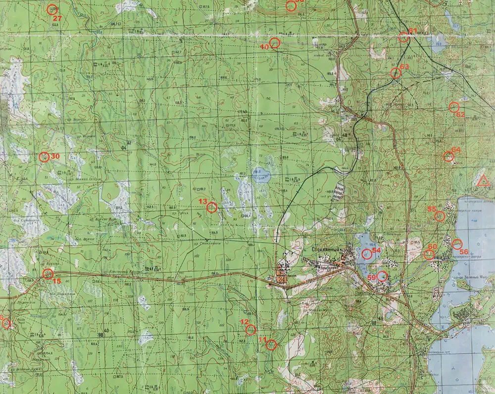
В 2010-х и 2020-х появились новые кубки и организаторы: Кубок коротких рогейнов (с 2018 года), HARD ROGAINE команды Hard Adventure (с 2021-го), «Лужский меридиан» (с 2022-го), лужские рогейны Юрия Шубина, часовые «Александрийские субботники» в парках Петергофа. Ленинградская область разыгрывает свой кубок по рогейну, с 2014 года проходит чемпионат Северо-Западного федерального округа. Из 23 чемпионатов России бегом пять прошли в Ленинградской области, и ещё пять из шести велосипедных и один из трёх водных.
Москва, Поволжье, Урал, Сибирь и Юг
Московские команды выигрывали чемпионаты России с 2005 года, а развивать рогейн в столичном регионе взялся, в частности, Александр Якимов: переехав из Перми, он начал «Московский рогейн», а затем «Компот-рогейн» («Рогейномания»). Московская область принимала чемпионаты России 2008 года📍 («Золото Сенежа», 109 команд) и 2014 года📍 (Алфёрово, Павлово-Посадский район), а также лыжный чемпионат 2013 года📍. Сегодня здесь проводятся Компот-кубок (x-lite.run; рогейны бегом, на лыжах и на велосипедах), серия «Золотой маршрут» агентства «Маршрут», аэророгейны и короткие городские рогейны: в 2025 году, например, агентство CLEVER провело серию двухчасовых «Нано-Подкустов» в московских парках, начиная с Измайлово📍. В архиве O-Maps 77 карт рогейнов Москвы и Подмосковья и 29 карт «Компот-рогейна» (три из них — за пределами Московской области, в Калужской и Владимирской). В локальных файлах московского календаря O-Maps есть исторические записи с 2013 года.
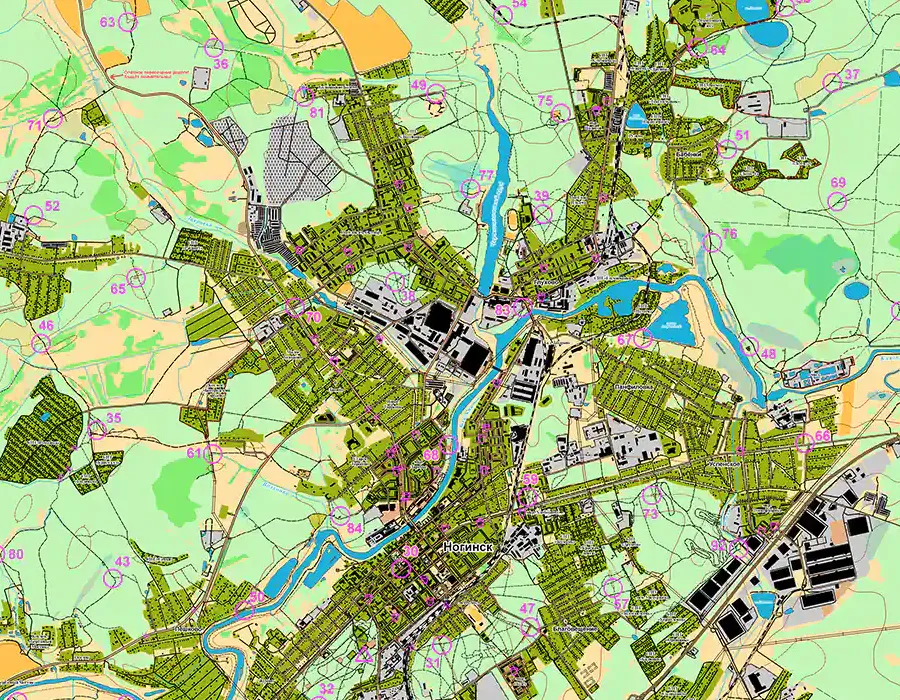
Нижегородская область провела три чемпионата России (2005📍, 2017📍, 2024📍), а главный её рогейн, «Осень Поволжья» команды «Нижегородский рогейн», в 2025 году прошёл в 21-й раз подряд в Горбатове и собрал больше 350 участников из десятка регионов (nn-rogaine.ru). Ниже по Волге чемпионаты принимали Самарская Лука📍 (2006) и Хвалынск📍 (2013), а Саратовская область — и первый водный чемпионат📍. На Рязанщине с 2016 года проходит водная приключенческая гонка «Ночная ПРАгулка» по реке Пре, там же в 2020-м прошёл чемпионат России📍.
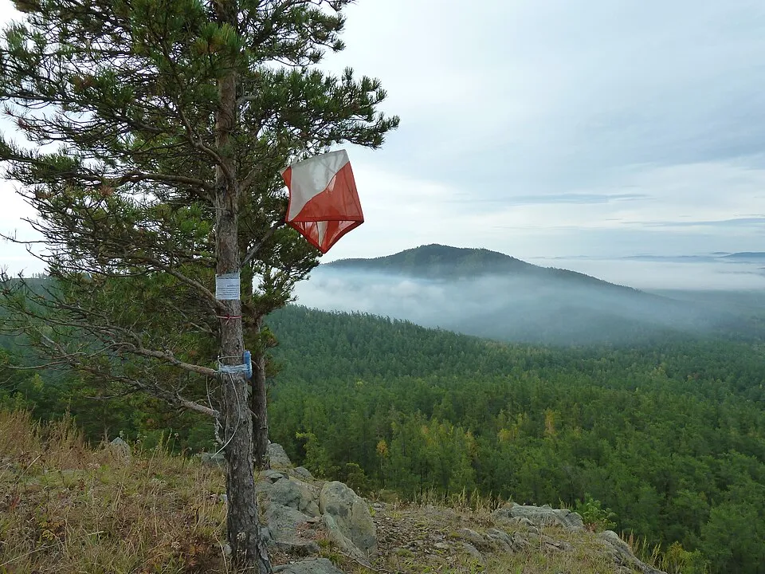

На Урале после Перми самым рогейновым местом стал Кыштым: «Кыштымский рогейн» в 2012 году прошёл уже в седьмой раз (ФРР), а у посёлка Слюдорудник разыграли чемпионаты России 2011📍 и 2022 годов📍; у карт обоих чемпионатов в архиве O-Maps по 11–12 авторов. В Свердловской области чемпионат прошёл в 2019 году📍. В Красноярском крае рогейн начала команда «Красноярский рогейн». Игорь Аникин вспоминал, что идея возникла в разговоре с Владимиром Котом. Позднее к организации присоединилась Елена Комлева. Первый «Красноярский рогейн» в 2011 году собрал 30 участников из Красноярска, Минусинска и Новосибирска. Сами организаторы склеивали карту Николаевской сопки из старых листов. Красноярск принял чемпионат России 2015 года📍, а в 2018-м чемпионат прошёл в урочище Карчалык в Хакасии📍 по карте И. Аникина. На юге первым стал Кубок России 2021 года под Новороссийском, а в 2023-м Абрау-Мысхако📍 принял юбилейный XX чемпионат России.
На лыжах, велосипедах, байдарках, в городе и по фотографиям
Лыжный рогейн в России почти ровесник пешего — Шестаков проводил «зимние рогейны» с февраля 2001 года, а под Петербургом лыжную «Сотню» впервые провели с подсчётом очков по системе рогейна в 2006 году. Тогда же, по воспоминаниям Н. Горбунцовой, в Токсово прошёл лыжный рогейн М. Антипова. Чемпионаты России на лыжах прошли трижды — в Иваново📍, в Лемболово📍 (авторы карты — С. Апатенков, А. Фершалов, К. Бекетов и В. Добрецов) и в Подмосковье📍. Дальше лыжные рогейны остались региональными стартами — в календаре O-Maps их до трёх в год. Велорогейн, напротив, прижился: под Петербургом он идёт с первого BikeAdventure 2005 года, «Сотня» проводит его летом с 2010-го, а чемпионаты России на велосипедах с 2013 года проводились шесть раз.
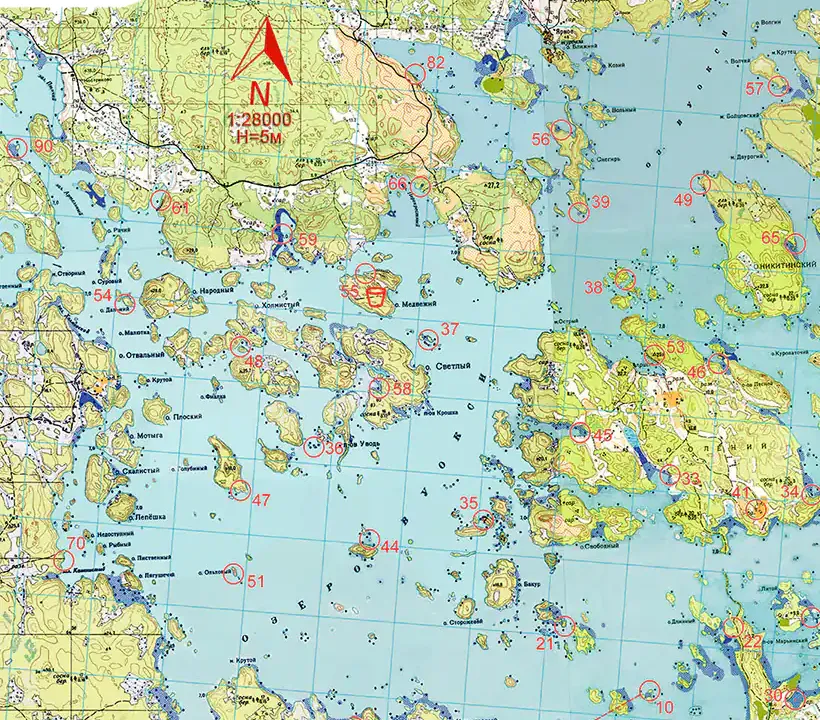
Водные рогейны — с КП на берегах и островах, которые команды объезжают на байдарках, — проводились под Саратовом, на озёрах Карельского перешейка, на Псковщине, а в Нижегородской области водный рогейн стал традиционным (nn-rogaine.ru). Первый чемпионат России на байдарках в 2015 году под Саратовом📍 выиграли Андрей Темяков и Павел Вереникин из Ростовской области, второй, на Вуоксе📍 в 2019-м, — петербуржцы Юрий Бородулин и Александр Эдуардов (34 команды), третий, у Себежа📍 в 2021 году, собрал всего семь экипажей. Под Петербургом весенний водный рогейн на байдарках проводит Илья Строганов (команда «Мультиспорт»).
Рогейн пришёл и в город. Уже в 2011 году в календаре O-Maps есть петербургский «Бегущий город», в 2020-х короткие рогейны проводят в парках Петергофа, Москвы и Петербурга, а Кубок коротких маршрутов с осени 2024 года ставит заочные фото-рогейны: маршруты по паркам и кварталам Петербурга, где на каждой отмеченной на карте точке нужно сопоставить местность с фотографией и записать ответ; проходить дистанцию можно в любое удобное время, пешком, бегом или группой-экскурсией (описание серии). Ночные старты — например, HARD ROGAINE Night📍 в Лемболово и ночной рогейн в Сосновом Бору📍 — добавляют к ориентированию фонарик.
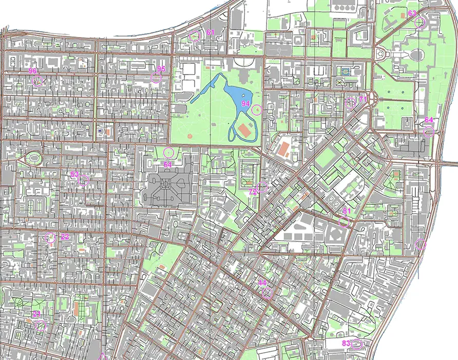
Карты рогейнов в архиве O-Maps
Рогейну нужна большая карта: дистанция суточного старта — это десятки и сотни квадратных километров, поэтому в Перми начинали с топографических листов 1:50 000, а сейчас чаще всего склеивают и дополняют спортивные карты нескольких районов. В архиве O-Maps 406 карт рогейнов. Из них 214 — Петербурга и Ленинградской области, 77 — Москвы и Подмосковья, 113 — других регионов, от Мурманской области до Дагестана и Приморья. Самая ранняя — карта «Марш-броска» 2000 года у Лесколово📍, самые новые — городские фото-рогейны 2026 года. Карты серий стартов можно найти на отдельных страницах: чемпионаты России, «Марш-Бросок», BikeAdventure, Кубок коротких маршрутов, Компот-рогейн.
Больше всего карт рогейнов в архиве — за авторством Виктора Рылова — 15, в том числе карты чемпионатов России 2012📍, 2016📍 и 2026 годов📍; «Список 280» называет его известным в России и Финляндии составителем спортивных карт. По 7–10 карт у рязанских авторов «Ночной ПРАгулки» (Б. Гусев, В. Винокуров, В. Кратенко) и у Сергея Апатенкова, рисовавшего карты «Сотни»; по шесть — у Виталия Чегаровского, автора карт Red Fox Adventure Race, и у московских авторов В. Тутынина и С. Якимова. Карту Карчалыка📍 для чемпионата 2018 года сделал И. Аникин, карты нижегородских чемпионатов — Д. Бареев с соавторами. Число карт растёт вместе с календарём: до 2010 года в архиве меньше десяти карт рогейнов в год, в 2010-х — 9–15, в 2024-м — 57.
Вместо заключения
За четверть века рогейн в России прошёл путь от двенадцати команд на лыжной базе «Динамо» до вида спорта со своей федерацией, правилами, ежегодными чемпионатами в четырёх дисциплинах и сотнями стартов в год. Его по-прежнему держат энтузиасты: чемпионаты и кубки проводят клубы и небольшие команды организаторов, карты рисуют сами рогейнеры, а историю бережно собирают на rogaining.ru и в «Рогейномании», где в 2026 году нашлась даже потерянная карта первого чемпионата России.
Международная изоляция 2022–2024 годов не остановила внутренний календарь. В 2026 году чемпионат России собрал команды из 25 регионов. Кубки России разыгрываются наряду с чемпионатами, а на 2027 год анонсирован чемпионат в Аракуле📍. Возвращение россиян в нейтральном статусе на чемпионат мира 2025 года сразу принесло абсолютную победу, но чемпионаты мира и Европы в Россию пока не возвращаются. Самое заметное движение сейчас — в коротких форматах: трёхчасовые, ночные, городские и фото-рогейны приводят в вид спорта тех, кто ещё не готов к суткам в лесу, и, судя по календарю, именно их в последние годы становится больше всего.
Календарь и архив O-Maps продолжают пополняться. Если у вас есть карты, протоколы или фотографии ранних рогейнов — особенно из Перми, Нижнего Новгорода, Тольятти и Москвы, которые пока представлены скромнее петербургских, — они пригодятся.
Статья составлена в октябре 2026 года; актуализирована 14 ноября 2026 года. Это компиляция материалов O-Maps и других источников, перечисленных в конце страницы, при её подготовке использовался ИИ. Если вы заметили неточность или можете дополнить рассказ, напишите нам.
Источники
Федерация рогейна России (rogaining.ru): «Рогейн в России», «Герман Николаевич Шестаков» (2009), С. Волкова, «Герман Николаевич Шестаков», Н. Глухов, В. Тарасов, заметки о чемпионате Европы 2003 года («Азимут», 2003, № 3), интервью с организаторами Красноярского рогейна, о федерации, руководство, Российские правила соревнований по рогейну, таблицы чемпионатов России, Европы, мира и медалей России, новости (итоги 2013 года, санкции IRF 2022 года, «Зеркальный-2022», чемпионат России 2026 года, заявки на 2027–2028 годы, чемпионат мира 2025 года, новости сентября 2012 года); сайт чемпионата мира 2013 года; Международная федерация рогейна, решение 2022 года; Н. Глухов, «Шестаков Герман Николаевич» (ФСОР); Н. В. Благово, «Первые азимуты на берегах Невы» (СПб., 2017; редакция O-Maps 2026 года); Telegram-канал «Рогейномания» (публикации 1550, 1551, 1553, 1556, 1654, август 2026 года); Википедия: «Рогейн в России», «Рогейн»; O-Site: «Список 280»; сайты организаторов: «Горный кросс», «Рогейн-клуб СПб» (чемпионат России 2007 года), «100х24» (интервью Н. Горбунцовой, 2012), «Нижегородский рогейн», Компот-кубок, «Маршрут», Red Fox Adventure Race; фотографии — Wikimedia Commons; даты, места, результаты и карты — календарь и архив карт O-Maps (числа о картах и событиях O-Maps в тексте и на диаграммах — по состоянию на 14 ноября 2026 года, архив и календарь продолжают пополняться); статьи O-Maps «Ориентирование в России и СССР», «Ориентирование в Ленинграде и Петербурге» и «Рогейн в мире».Указатель имён
Люди, упомянутые в статье со ссылкой на страницу о них. Имя ведёт на основную страницу о человеке (отчество, если известно, — во всплывающей подсказке), за ним — другие источники, цифры в конце — места упоминаний в тексте.
- Аникин Игорь · руководство ФРР 1
- Апатенков Сергей 1 2
- Бекетов Константин · карты на O-Maps 1 2
- Благово Никита · O-Site, «Патриарх питерского ориентирования» 1 2
- Бородулин Юрий · «Список 280» 1
- Добрецов Виктор · карты на O-Maps 1
- Добкович Владимир 1 2 3
- Емельянов Евгений 1
- Комин Игорь · карты на O-Maps 1 2
- Комлева Елена 1
- Копелевич Александр · руководство ФРР 1 2 3
- Куприенко Денис · интервью 2012 года 1 2
- Лисененков Александр · «Список 280» 1
- Рылов Виктор · карты на O-Maps · руководство ФРР 1 2 3 4 5
- Рыжов Сергей 1
- Симакин Сергей · карты на O-Maps · руководство ФРР 1
- Строганов Илья · карты на O-Maps 1 2 3
- Фершалов Андрей · карты на O-Maps 1 2 3
- Чегаровский Виталий · карты на O-Maps · «Список 280» 1
- Шестаков Герман · ФРР, биография · С. Волкова, воспоминания 1 2 3 4 5 6
- Якимов Александр · ЧМ-2013 1 2 3 4
Посмотреть архив: все рогейны в календаре · чемпионаты России по рогейну · чемпионаты Европы и мира · карты Кубка коротких маршрутов · все карты O-Maps.